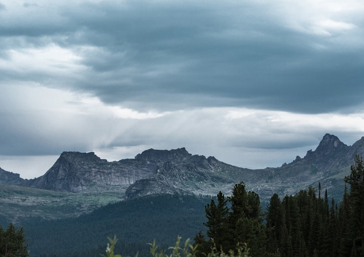
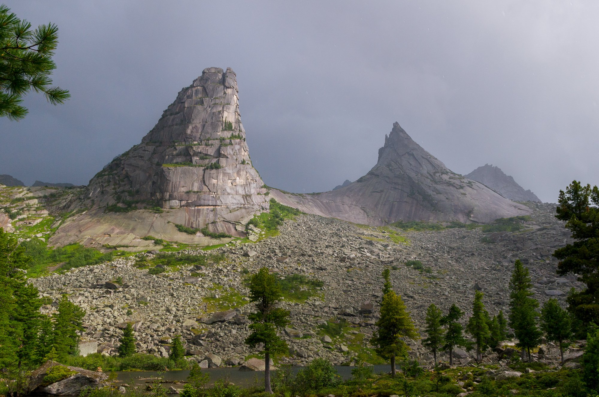
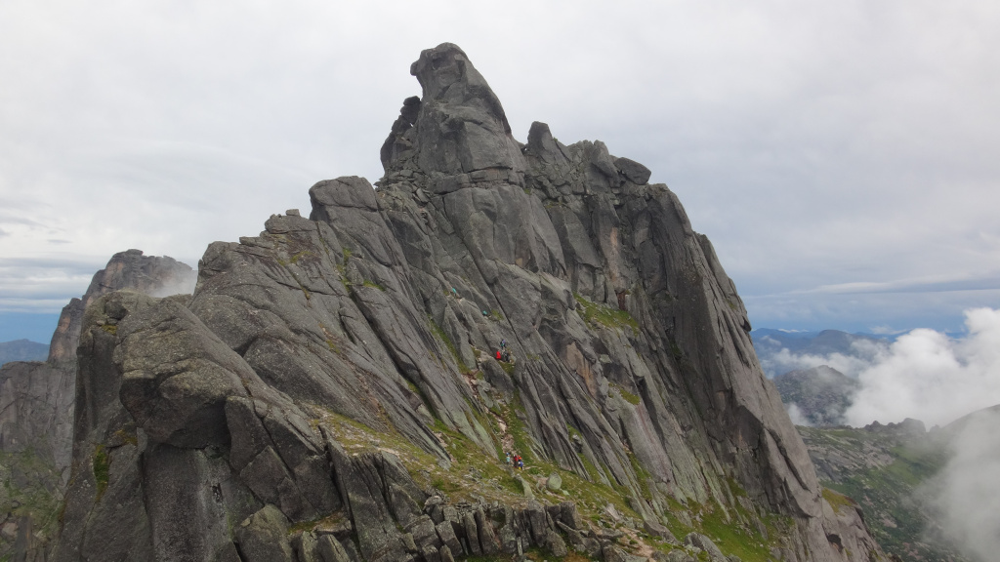
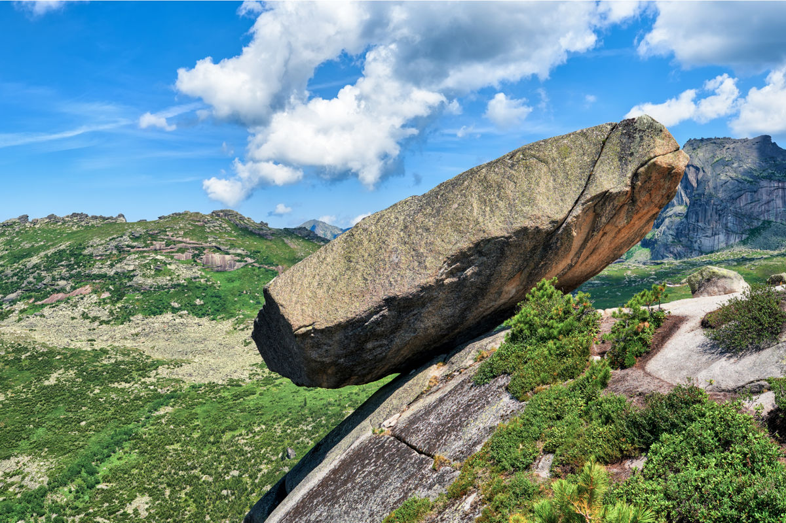
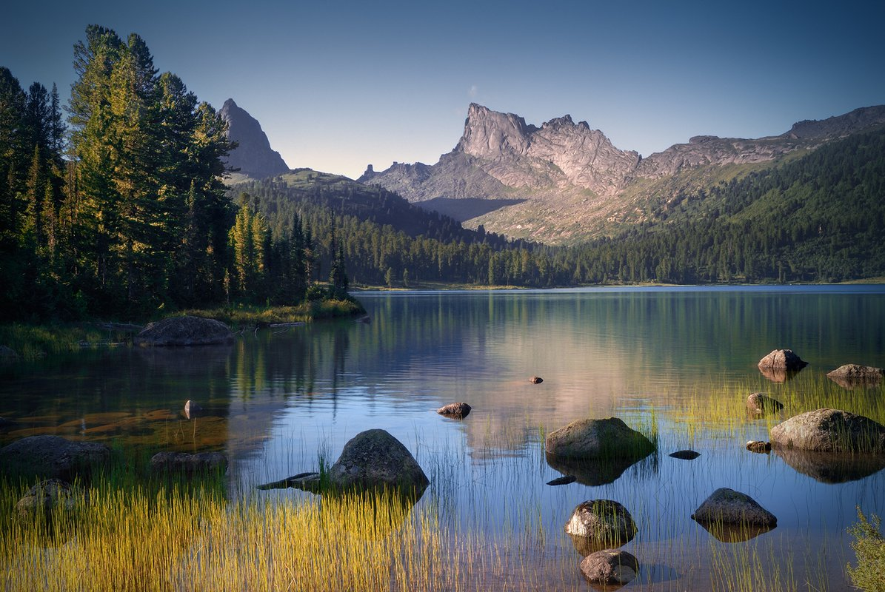
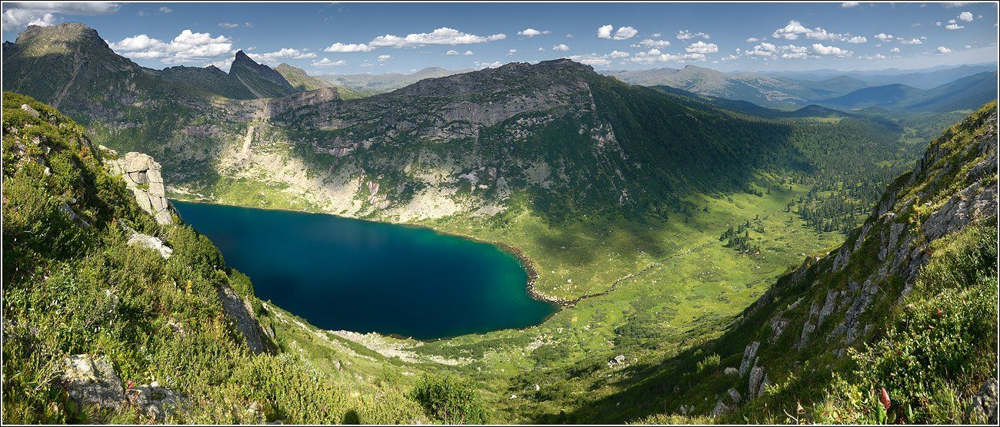
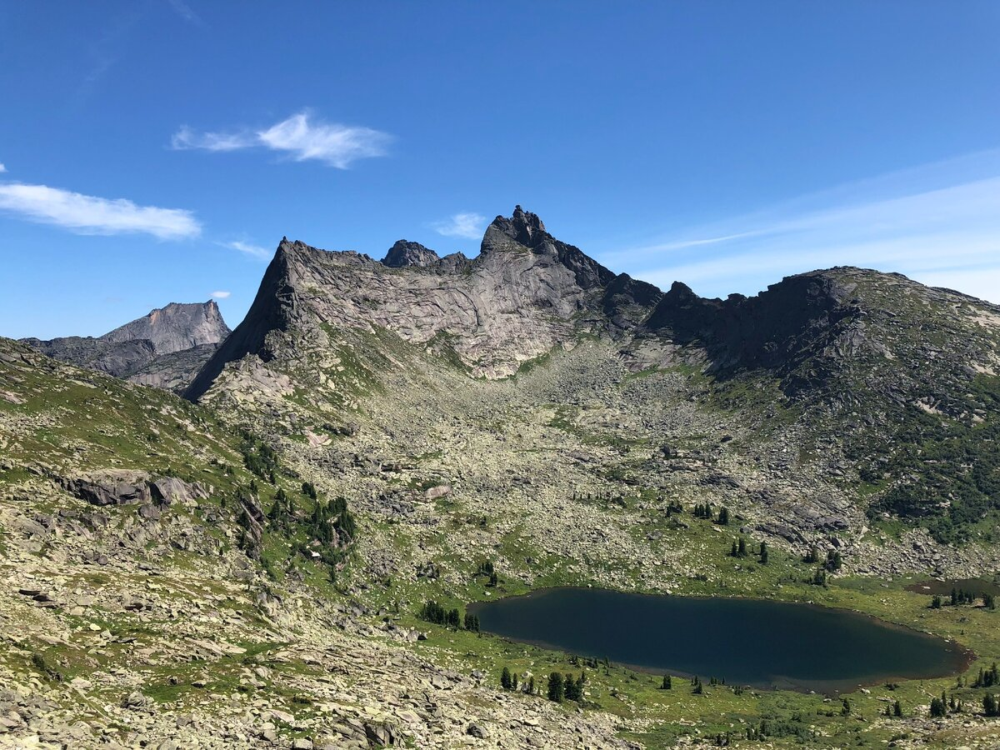

Природный парк «Ергаки» располагается в южной части Красноярского края. По территории парка протянулась цепь гор Западного Саяна, со скал которого открываются величественные пейзажи. Также в парке можно искупаться в чистейших горных озерах и полюбоватьяся природой. Экскурсии часто многодневные, с ночевками в палатках.
Ергаки — природный парк краевого значения, расположенный на юге Красноярского края. Его площадь составляет 342 873 га, а абсолютные высоты от 400 до 2740 м. Речная сеть парка достаточно густая и разветвленная, многие крупные реки прорезают хребты. Здесь располагаются истоки таких рек как: Большой Кебеж и Большой Ключ, а также Тайгиш, Средняя, Верхняя и Нижняя Буйба.
Большое влияние оказывает фактор рельефа: парк расположен в пределах Западного Саяна, причём за счёт своей протяжённости охватывает различные высотные горные пояса. Протяжённость с севера на юг составляет 75 км, а по долготе — около 120 км. Это существенно увеличивает разнообразие природных условий и, как следствие, разнообразие флоры и фауны: видов растений, животных и грибов. При этом северная половина парка находится на северном макросклоне горной системы и получает максимальное количество осадков, в то время, как южная часть находится в дождевой тени.
Кызыл – ближайший к парку город.
На территории парка господствует континентальный климат. Климатические условия территории очень неоднородны. За счёт высокой влажности климат северных районов парка более мягкий, слабо континентальный, в то время как на юге континентальность резко возрастает. Среднегодовое количество осадков на севере составлет 1000 — 1500 мм, в то время как на юге — 400 мм.
Лето в горах продолжается только один-два месяца. Средняя температура июля понижается с высотой от 16° до 6°. Зима продолжительная и холодная: с сентября и до середины мая склоны гор покрыты снегом и нередки морозы в 40° при ветре.
Разнообразие современной экологической обстановки Западного Саяна, сформировалось от положения территории на стыке таежных пространств Сибири с сухими континентальными степями Центральной Азии.
Растительный мир природного парка "Ергаки" весьма своеобразен и ярок. Свыше 70% сосудистых растений, встречающихся здесь, не выходят за пределы Азии, демонстрируя самобытность флоры. По предварительной оценке здесь произрастает около 1500 видов сосудистых растений, по нескольку сотен мхов, печеночников, лишайников и грибов. Есть много уникальных, известных только из этих мест и открытых наукой именно отсюда видов. Это Ястребиночка кебежская, Борец Черепнина, Борец Танзыбейский и Борец Буйбинский, которые внесены в Красную книгу Красноярского края.
Самым многовидовым семейством растений Ергаков являются сложноцветные. Они представлены более чем полусотней видов и в высокогорьях, и в низкогорьях. Также весьма многочисленны семейства злаков и осоковых. Кроме сосудистых растений здесь немало мхов. Лишайники в Ергаках бывают разных форм, размеров, расцветок.
В буйбинской части Ергаков не меньше тайги представлена группа экосистем, лишенная древесной растительности – луга. Горные луга бассейна Нижней Буйбы очень разнообразны. Наиболее заметными, впечатляющими являются горные субальпийские и альпийские луга. Среди растений субальпийских лугов много тех, что занесены в Красную книгу и требуют защиты от деятельности человека.
Сложная история формирования фауны в этих условиях определила богатство животного мира природного парка "Ергаки". В природном парке обитает 49 видов млекопитающих, из них в Красную книгу Красноярского края внесены 4 вида (олень северный лесной и 3 вида ночниц), а в приложение к Красной книге — 6 (выдра речная, кабан сибирский, рысь обыкновенная, кабарга, марал и лось). Широко распространены заяц-беляк, рысь, северный олень, бобр, белка, бурундук и др.
На территории гнездятся 163 вида птиц. зону лесов населяют более 100 видов птиц, в число фоновых преимущественно входят представители сибирской таежной фауны: буроголовая гаичка, пеночка-зарничка, обыкновенный поползень, синий соловей и др. В лесах почти повсюду обычны глухарь и рябчик. В высокогорной части участка гнездятся около 15 видов птиц: гималайская завирушка, сибирский вьюрок, хрустан, тундряная куропатка и др. Наиболее распространен горный конек.
Видовой состав ихтиофауны характеризуется очень незначительной численностью. Из рыб на территории парка встречаются хариус, налим, гольян, подкаменщики сибирский и пестроногий, голец сибирский, щиповка, минога сибирская. В реке Ус встречается ленок и таймень, однако эти виды всегда редки.
В границах парка обитает 3 вида земноводных: остромордая лягушка, серая жаба и сибирский углозуб, а также 4 вида пресмыкающихся: узорчатый полоз, живородящая ящерица, обыкновенная гадюка, обыкновенный щитомордник.
Спящий Саян стал поистине знаковым для этих мест. Это скалистая гряда, которая очень напоминает силуэт спящего на спине мужчины. У него отчетливо видно лицо, руки, сложенные на груди, и ноги. Удивительно, но силуэт просматривается с любого ракурса, с разных сторон, что большая редкость для природных мест. Про Спящий Саян существует легенда, будто это могучий, мудрый и добрый богатырь Святогор, который пребывает в глубоком сне до времён, когда баланс добра и зла нарушится. Тогда в озеро Радужное упадет знаменитый Висячий камень, который находится у ног Саяна, а брызги озера разбудят богатыря, который встанет на защиту человечества.
Среди всех природных чудес, выдающимся символом парка является мистическая скала Парабола. Скалы Тонкий и Толстый брат (так их называют туристы) стоят над озером Художников, создавая прекрасный архитектурный ансамбль: они обрамляют линию, которая идеально напоминает геометрическую фигуру. С этими скалами связано несколько легенд, согласно одной из них в этих краях существовала страна из мифов — Гиперборея, которая была колыбелью цивилизаций. Существует также предание о том, что эти скалы - братья когда-то соединялись сверху, образуя большое кольцо из камней, сквозь которое могли пролететь космические корабли. Также есть мнение, что Парабола ранее была древней обсерваторией.
Выделяется также благородная гора Птица, стоящая на высоте 2221 метра над уровнем моря. Скала похожа на огромную птицу, притаившуюся среди горных вершин. С пика открывается невероятный широкий обзор — изрезанные хребты Спящего Саяна, долина Тайгиш, пики Звёздный, Молодежный, озеро Горных Духов. Для смельчаков, стремящихся поближе к облакам, есть тропа, ведущая к плечу Птицы. На вершину этого образования могут подняться даже неопытные путешественники, следуя маркированным маршрутам с разной степенью сложности.
Висячий камень по праву считается самой интересной и притягательной достопримечательностью. Это необычный валун весом более 600 тонн, который возвышается на высоте 1750 метров над уровнем моря. Со стороны кажется, что камень неустойчив и вот-вот потеряет хрупкое равновесие. Но, несмотря на свое шаткое положение, он непоколебимо пребывает в балансе. Попытки туристов сдвинуть его, используя домкраты с лебедками, оказались безрезультатными — камень остался на своем месте.
Также упоминания заслуживают пики Молодежный, Зуб Дракона, Зеркальный и пик Звездный — самая высокая вершина Ергак (2264 м).
Озеро Светлое — это красивейший водоем, высота расположения которого 1510 метров над уровнем моря. Оно одно из самых крупных в парке, которое протянулось на 450 метров с севера на юг и 1140 метров с запада на восток. Вода в этом оазисе природы чиста и прозрачна, а вокруг озера шумит древняя тайга, нетронутая человеком. Рядом расположились два могущественных пика — Звездный и Птица. Глубина озера достигает 60 метров, и, внимательно оглядывая его гладь, можно увидеть камни, поросшие травой. У берегов озера часто много туристов с палатками, ведь от озера недалеко до многих достопримечательностей парка.
Расположенное на высоте 1593 метра Озеро Золотарное имеет почти идеальную овальную форму (900 м в длину, 350 м в ширину). Озеро поражает своей красотой: находящееся в кольце каменных великанов, оно имеет пронзительно-лазурный цвет. Берега озера практически усыпаны камнями разной величины, из растительности близ него встречаются только низкорослые кустарники и травы, характерные для высокогорья. Озеро относят к водоемам ледникового происхождения. Названием озеро обязано реке Золотой Ключ, которая проотекает через него. Но озеро имеет и другое название — Малахитовое. Если смотреть на Золотарное сверху, то оно очень похоже на гладкую малахитовую брошь.
Мраморное озеро расположено на высоте 1600 метров в горном цирке (цирк — котловина в горах, в виде амфитеатра). Считается, что название водоёма происходит от невероятной чистоты его вод. Цвет озера — темно-синий, а дно покрыто камнями, которые отлично видно на любой глубине. Берега водоёма довольно пологие, кое-где поросшие травой, а в иных местах наблюдаются россыпи серебристо-серых камней разного размера. Возле Мраморного растёт очень мало деревьев, поэтому, невзирая на защиту суровых гор, здесь часто дуют пронизывающие ветры. Учитывая расположение места, здесь часто бывают туманы
История Ергак началась задолго до подписания официальных документов о создании природного парка «Ергаки». В XX веке первооткрывателями Ергак были красноярские художники — Владимир Ильич Мешков, Тойво Васильевич Ряннель, Рудольф Крустинович Руйга и другие. Советский художник и поэт Тойво Васильевич Ряннель впервые побывал здесь в 1949-м. В своей книге «Незваный гость» он посвятил им следующие строки:
«Неправдоподобные скалистые пики Ергака зовут меня всегда. Впервые их зов, как щемящую боль, я почувствовал в степи под Ермаковским. Так неожиданно возникли над пологими предгорьями Западного Саяна их синие нагромождения... Здесь в подавляющем избытке найдешь все то, что называют экзотикой».
В 50-60 годы происходит постепенное освоение района красноярскими столбистами и туристами, которые совершают первые восхождения, прокладывают удобные туристские маршруты. В 1969 году произошло важное событие — 25 июля красноярскими альпинистами была покорена самая высокая и одна из труднодоступных вершин — пик высотой 2264,7 м, впоследствии названный Звездным. В 70-х годах были совершены первые восхождения по простейшим путям на основные вершины.
В 80-х годах начинают организовываться первые централизованные лагеря оздоровительного характера (в основном смешанного типа) в районе озер Светлое, Радужное, ручья Медвежий, в районе базы Минусинских спасателей. Сторонниками пешеходного и горного туризма начинает активно осваиваться центральная часть Ергаков. Кроме того, развивается конный маршрут, проходящий по хребту Кулумыс, с заходом в урочище Каменный город и к озеру Радужное.
В 90-х годах началось альпинисткое освоение Ергак, а в середине 90-х начался массовый наплыв туристов. Cвязано это с социально-политическими конфликтами, из-за которых доступ в признанные районы альпинизма и горного туризма (Кавказ, Памир, Памиро-Алтай, Тянь-Шань) стал весьма проблематичным. Саяны же остались одним из немногих районов России с условиями пригодными для разнообразных видов туристской деятельности. C 1995 года стали проводиться зимние и летние чемпионаты Красноярского края, Сибири и Дальнего Востока по скалолазанию.
Необходимость сохранения ландшафтного и биологического разнообразия Западного Саяна, а также оптимального использования высокого рекреационного потенциала территории являлись неоспоримыми аргументами неоднократных предложений об организации особо охраняемой природной территории.
В 1999 году согласно «Схемы развития ООПТ в Красноярском крае» планировалось создать в Ермаковском районе два заказника — «Араданский» и «Ергаки». В связи с тем, что территория Западного Саяна имеет очень высокую рекреационную ценность и биоразнообразие, было предложено вместо заказников создать природный парк.
Особо охраняемая природная территория - природный парк краевого значения «Ергаки» был создан постановлением Совета администрации Красноярского края от 4 апреля 2005 года. Основная задача природного парка «Ергаки» - сохранение природных комплексов и объектов, растительного и животного мира в сочетании с созданием условий для отдыха посетителей и сохранения рекреационных ресурсов.
14 февраля 2006 года в целях охраны и развития рекреационной деятельности на территории природного парка, было создано краевое государственное учреждение «Дирекция природного парка «Ергаки».